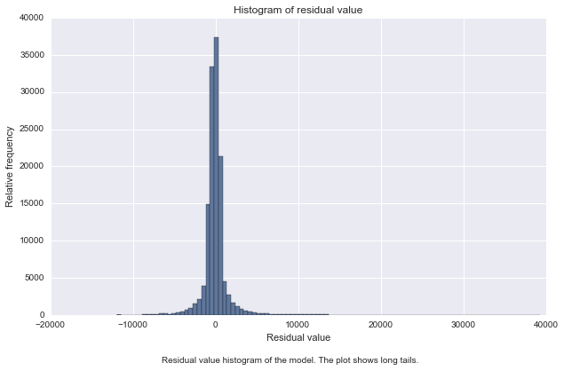
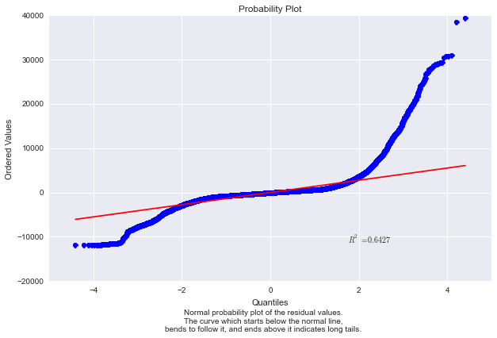
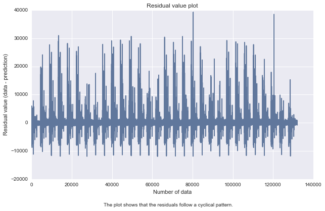
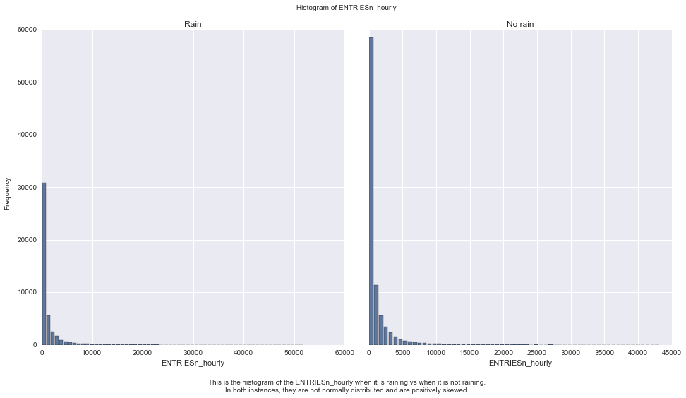
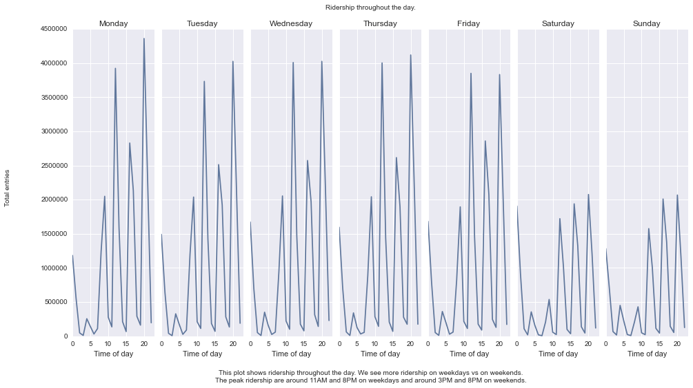

This project look at the NYC Subway data and figure out if more people ride the subway when it is raining versus when it is not raining.
The data can be found at:
I divided the dataset into two samples, entries per hour when it is raining vs when it is not raining and then perform inferential statistic on them.
I perform Mann-Whitney U test on the two samples.
I am performing a two-tail P value.
The null hypothesis is:
The distributions of both groups are identical, so that there is a 50% probability that an observation from a value randomly selected from one population exceeds an observation randomly selected from the other population.
P(x > y) = 0.5
Alternative hypothesis:
The distributions of both groups are not identical, the probability that an observation from a value randomly selected from one population exceeds an observation randomly selected from the other population is not 50%.
P(x > y) != 0.5
I use 0.05 as p-critical value.
I am using this test because the samples is non-normal. Generally, we use Mann-Whitney U test, if it follows several assumptions:
Calculating the Mann-Whitney U test I got:
U value of 1924409167.0 and p-value of 0.049999825587
Some descriptive statistics regarding our two samples.
With rain summary Without rain summary
count 44104.000000 87847.000000
mean 1105.446377 1090.278780
std 2370.527674 2320.004938
min 0.000000 0.000000
25% 41.000000 38.000000
50% 282.000000 278.000000
75% 1103.250000 1111.000000
max 51839.000000 43199.000000
Since the p-value is < 0.05, we conclude, the Mann-Whitney test indicates that the ridership is significantly different for when it is raining than when it is not raining, U = 1924409167.0, p = 0.049999825587.
To compute the coefficients theta and produce prediction for ENTRIESn_hourly in the regression model I choose to use OLS using Statsmodels.
I use the following features:
rain, precipi, meantempi, fog, meanwindspi, Hour
In addition to this, I have added dummy variables 'UNIT' for the features.
I am interested in several features and I choose to play around with combination of several of the following features:
Using Python itertool.combination module I generate list of all possible combination from the above feature list (e.g. ['rain'], ['rain', 'precipi'], ['rain', 'fog'] , ['rain', 'fog', 'Hour'], ['rain', 'fog', 'Hour', 'precipi'] and so on). In total there are 63 combinations.
I compute the predictions and the R^2 value for each combination and use the combination with the best R^2 value (R^2 must at least be 0.40).
In the end I got rain, precipi, meantempi, fog, meanwindspi, Hour as the features with the best R^2.
The coefficients for the model is:
Non-dummy Parameters:
The R^2 value is 0.458621326664
The 'rain' coefficient from our model turns out to be negative. The P value for this coefficient (0.011) is greater than 0.05, which indicates that is not statistically significant. The 'precipi' coefficient also has a P value that is greater then 0.05.
To check if the R^2 is fit for the regresion model. I also do some analysis on the residual. First I plot the residuals histogram as follow:

The histogram has long tails, which suggests that there are some very large residuals. To make sure I plot normal probably plot.

The plot confirms that we have long tails problem which means we are seeing more variance than we would expect in a normal distribution.
In fact if we simply plot the residual values we got:

It shows that there are some non-linearity in the data. And this should be addressed by designing a non linear model.
In conclusion, we achieve a R^2 value that we set (> 0.40), but on further inspection we find out that the linear model is not appropriate to predict ridership.
The 'rain' coefficient which we initially thought as an important feature, turns out not to be not so important. In fact, we probably should remove it from our model.
I present the following visualization for this project below.


Our statistical analysis indicates that there is significant difference in ridership when it is raining vs when it is not raining.
We develop a model to predict the ridership. We used linear model (OLS) and achieve R^2 value that we set as the goal. However after looking at the coefficients and analyzing the residual, we find that the model is not appropriate to predict the ridership.
The dataset although big (131951 records) only covers 30 days of data. The data was collected from 2011-05-01 to 2011-05-30 This is probably not enough. It will be interesting to see data from multiple months. If for instance on April it rains a lot, can we see that the ridership on April is significantly different then the ridership on May.
We used linear regression method to make our models. But the resulting model does not seems to be appropriate to predict the ridership of NYC subway. We need to address the non-linearity in the data.
Initially I thought maybe if I remove the Hour from the model features list (looking at figure 3.2 I conclude that this is what causes the cycle) the model will work, but I got the same result.